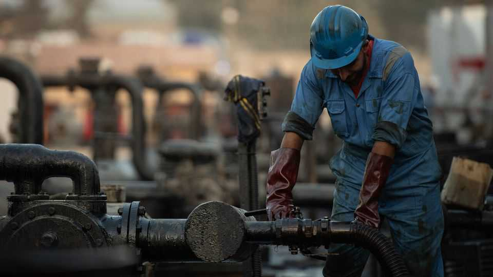
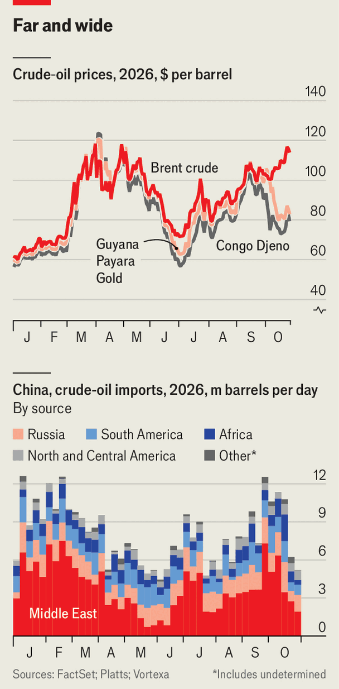

The never-ending absurdity of global oil markets
Despite stronger Gulf exports, Brent is near its Iran-war peak

Oct 29th 2026
EIGHT MONTHS into the Iran war the oil-market riddle keeps deepening. Since early September exports from the Middle East have climbed. They exceeded 17m barrels per day (b/d) in the week to October 23rd, just 4m b/d below 2025 levels, reckons Vortexa, a data firm. Yet in the same period the price of Brent futures, the international benchmark for crude, has jumped by a fifth, to $115 a barrel, nearing its April peak (see chart).
Three factors explain why oil is so pricey, starting with a change in China’s appetite for crude. In March its government, worried about supplies, banned exports of refined products. Refiners drew on stocks and consumers used less fuel. The result was a near-halving of crude imports between February and June, by 6m b/d. That was a big reason why the largest oil-supply shock in history did not push prices higher.

In June a detente between Iran and America caused prices to drop. Chinese refiners lobbied to lift the export ban: with Gulf exports still blocked and Russian refineries pummelled by Ukraine, refiners’ margins elsewhere set records. From July China resumed exports and imports rebounded. In the three weeks to October 16th they were more than 3m b/d above June’s level—enough to absorb some of the jump in Middle East exports, notes Neil Crosby of FGE NexantECA, a consultancy.
Chinese imports have since edged down. But a second factor—a rise in freight costs—is still forcing up prices. The way China has been buying has played a part in this: rather than purchasing on pre-agreed schedules, it chased better prices on the spot market, creating demand for tankers that was harder to plan for and costlier to secure, according to Tom Reed of Argus Media, a price-reporting agency.
Meanwhile, the rise in Gulf exports via the Strait of Hormuz has added to tanker demand. Such voyages need fleets of state-owned tankers to shuttle clandestinely through the strait, collect cargo, then transfer it in the Gulf of Oman to other vessels that may wait for days. That ties up more vessels, pushing up freight costs worldwide. These once made up 4-7% of the cost of delivering oil to Chinese buyers; by October they accounted for 25-30%.
Such costs have spilled into the wider market. Producers in Latin America and west Africa, farther from buyers, have discounted their crude to stay competitive; North Sea drillers, by contrast, command a fuller price. This “geography premium” has opened up a spread between the cheapest and priciest grades that recently neared $60—and pulled Brent a bit higher.
But demand and freight do not fully explain why Brent sits far above “fair” value, which JPMorgan Chase, a bank, puts some $20 below the recent price. The gap reflects the third factor: fear that further violence could slow Gulf exports again. In October Iran has struck at least 30 vessels, the highest monthly tally of the war by far. Yemen’s Houthi rebels have attacked Saudi Arabia’s cities, airports, refineries and the country’s (recently repaired) East-West oil pipeline. In the month to October 22nd, seven of the eight days on which Brent moved by more than $2.50 a barrel brought news of peace talks or worsening tensions, counts Morgan Stanley, another bank.
Mr Trump has hinted he might strike Iran again after America’s midterm elections on November 3rd. Markets are waiting to see if he does: low trading volumes in Brent futures give every bullish bet outsize weight. If he holds off, prices will probably fall back within days. But large-scale bombing, alongside major Iranian and Houthi attacks, could push prices to $130-140 a barrel, reckons Jim Burkhard of S&P Global, a data firm.
China holds ample oil stocks, and rich countries retain strategic reserves; both will probably be tapped if prices go so high. And the Brent futures curve, refining margins and forward freight prices suggest markets fear disruption will last well into 2027. In April traders were close to panic. Now they are nearer to resignation. ■